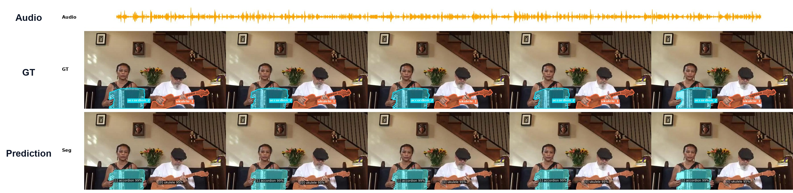
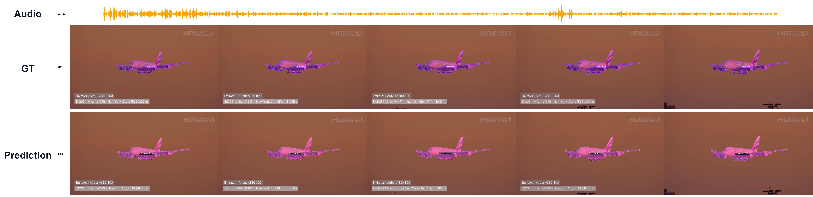
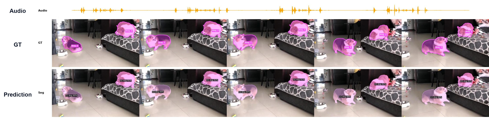
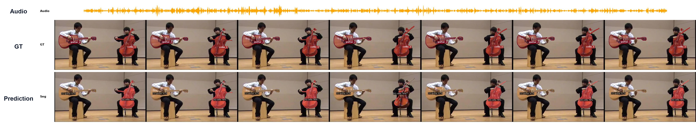
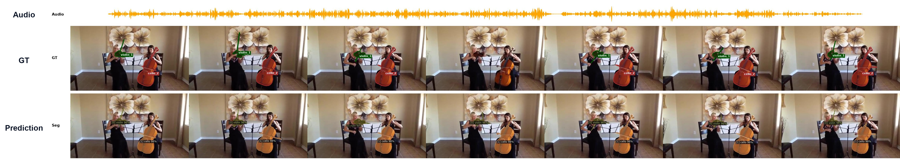

A deep learning framework for segmenting and tracking sounding objects in video sequences.
umer.ramzan@gift.edu.pk
Audio-Visual Instance Segmentation (AVIS) requires a model to find, segment, and track every object that is actually producing sound. We begin by measuring four properties of the AVISeg benchmark and of a trained model’s internals, and let them narrow the design space.
Two close directions off: the sound-to-silence transition proves sharp rather than gradual, so temporal smoothing of the audio stream is unwarranted; and the sounding/silent distinction is absent from a trained model’s attention weights while clearly present at its downstream classification embedding (Cohen’s \(d = 0.555\)), so a silence mechanism reading from attention cannot succeed. Two shape the architecture: sounding-object scale spans nearly two orders of magnitude across the benchmark’s categories, motivating multi-scale channel–spatial refinement; and same-category instances almost never desynchronize among instruments yet frequently do among people and animals, redirecting effort from same-class separation toward long-range association.
The resulting model, SAVIS, augments a windowed video-level fusion module with attention-sink registry tokens, alongside that multi-scale refinement block, causal audio-visual fusion, and audio-guided contrastive learning. Its strongest results fall on precisely the multi-source localization, detection, and association axes those two measurements identify. A controlled audio-encoder ablation then exposes a consistent trade-off between silent-frame accuracy and overall detection, and the attention-separability result explains why that gap resists mechanisms operating on attention.
Rigorous evaluation on the AVISeg test benchmark under the standardized ResNet-50 ImageNet-only training protocol.
| Task | Method | Audio | FSLA ↑ | HOTA ↑ | mAP ↑ | FSLAn ↑ | FSLAs ↑ | FSLAm ↑ | AssA ↑ | DetA ↑ |
|---|---|---|---|---|---|---|---|---|---|---|
| VIS | Mask2Former-VIS (CVPR'22) | ✗ | 29.75 | 52.03 | 28.66 | 0.00 | 25.47 | 36.37 | 64.49 | 43.33 |
| VITA (NeurIPS'22) | ✗ | 38.04 | 57.48 | 36.25 | 15.04 | 27.98 | 47.45 | 69.86 | 48.96 | |
| AVSS | AVSegFormer (AAAI'24) | ✓ | 35.66 | 55.74 | 35.72 | 18.58 | 27.51 | 43.08 | 67.13 | 48.51 |
| COMBO (CVPR'24) | ✓ | 39.49 | 57.39 | 37.84 | 21.91 | 27.18 | 49.63 | 68.87 | 50.12 | |
| AVIS | AVISM Baseline (CVPR'25) | ✓ | 42.78 | 61.73 | 40.57 | 32.22 | 29.83 | 52.40 | 71.15 | 54.97 |
| SAVIS (VGGish, Ours) | ✓ | 41.78 | 61.92 | 41.80 | 40.28 | 29.63 | 49.70 | 70.89 | 55.28 | |
| SAVIS (BEATs, Ours) | ✓ | 43.49 | 62.38 | 40.73 | 18.90 | 34.72 | 52.29 | 71.41 | 55.86 |
FSLA: Frame-Level Sound Localization Accuracy (average across \(\alpha \in [0.05, 0.95]\)). FSLAn / FSLAs / FSLAm: Silent (no-sound), single-source, and multi-source components. HOTA / AssA / DetA: Higher Order Tracking Accuracy, Association Accuracy, and Detection Accuracy. mAP: Video mean Average Precision over spatio-temporal IoU trajectories.
| Block | mAP ↑ | FSLA ↑ | FSLAm ↑ | HOTA ↑ | AssA ↑ | DetA ↑ |
|---|---|---|---|---|---|---|
| Spatial Gated (SGF) | 38.50 | 38.10 | 46.62 | 60.59 | 71.15 | 52.74 |
| CBAM (Ours) | 38.60 | 42.13 | 49.79 | 61.12 | 71.19 | 54.10 |
| Fusion | AGCL | mAP ↑ | FSLA ↑ | FSLAn ↑ | HOTA ↑ |
|---|---|---|---|---|---|
| SGF | ✗ | 39.54 | 41.33 | 28.57 | 60.10 |
| CCAF (Ours) | ✓ | 41.80 | 41.78 | 40.28 | 61.92 |
Evaluating temporal tracking, mask fidelity, and sound-source discrimination across major sound families.





Single consumer GPU execution environment (NVIDIA RTX 4080 / Ubuntu 24.04 / CUDA 12.1 / PyTorch 2.1.0).
# Clone repository
git clone https://github.com/Sayyam-Akram/savis.git
cd savis
# Setup Conda environment
conda create --name savis python=3.8 -y
conda activate savis
# Install PyTorch with CUDA 12.1 support
pip install torch==2.1.0 torchvision==0.16.0 --index-url https://download.pytorch.org/whl/cu121
# Install OpenCV, Ninja, dependencies & Detectron2
pip install -U opencv-python ninja
pip install -r requirements.txt
git clone https://github.com/facebookresearch/detectron2.git
cd detectron2 && pip install -e . && cd ..
# Compile Deformable Attention CUDA Operators
cd mask2former/modeling/pixel_decoder/ops
sh make.sh
cd ../../../../# Setup AVISeg Dataset directory
mkdir -p datasets
# Download and extract AVISeg.zip inside datasets/
# Setup Pretrained Backbones and Checkpoints
mkdir -p pre_models checkpoints
# Move BEATs checkpoint to root directory:
# -> BEATs_iter3_plus_AS2M.pt
# Move visual backbone weights to pre_models/
# Move trained SAVIS checkpoint to checkpoints/:
# -> checkpoints/AVISM_R50_IN.pth# Train SAVIS on a single consumer GPU (RTX 4080 16GB, effective batch size 2 via grad accum)
python train_net.py \
--config-file configs/avism/R50/avism_R50_IN.yaml \
--num-gpus 1# Evaluate trained SAVIS checkpoint on AVISeg Test Set
python train_net.py \
--config-file configs/avism/R50/avism_R50_IN.yaml \
--eval-only \
MODEL.WEIGHTS checkpoints/AVISM_R50_IN.pth# Run visualization demo and generate qualitative segmentations on video sequences
python demo_video/demo.py \
--config-file configs/avism/R50/avism_R50_IN.yaml \
--opts MODEL.WEIGHTS checkpoints/AVISM_R50_IN.pth \
--output-dir demo_output/@article{akram2026savis,
title={SAVIS: A Sink-Augmented Baseline for Audio-Visual Instance Segmentation},
author={Akram, Sayyam and Hamza, Meer and Yousaf, M. Nouman and Akram, Hassan and Ramzan, Umer},
journal={Preprint},
year={2026}
}